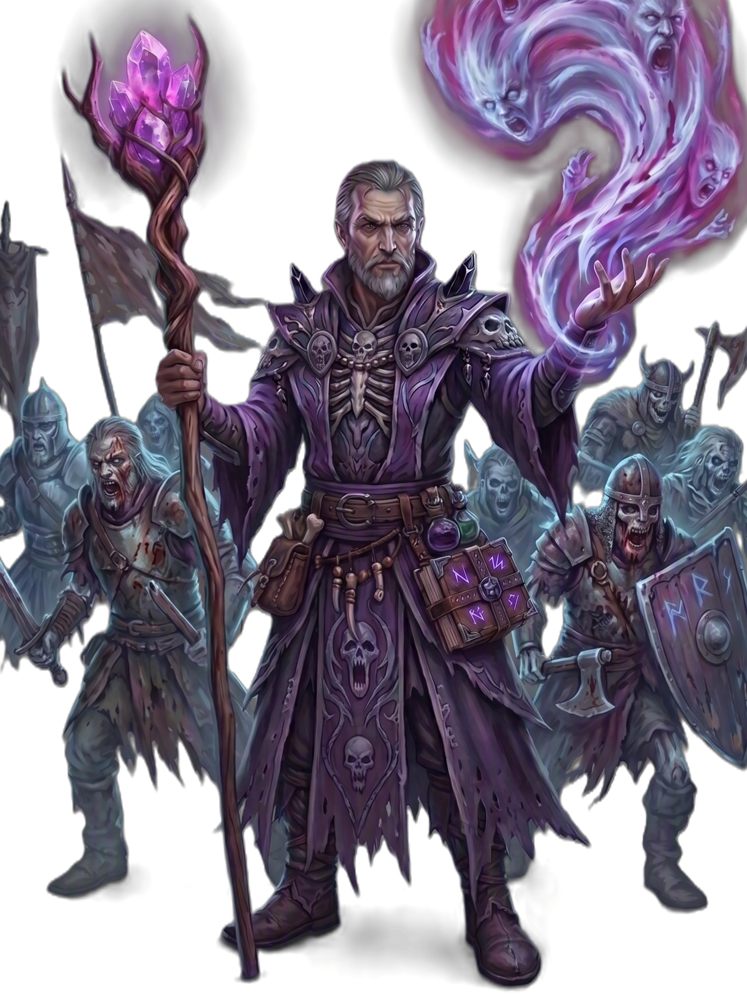

| Rolle | Vollzauberer · Äther-Schaden · Beschwörer · Lebensraub · Kontrolle |
| Zauberertyp | Vollzauberer Zauberslots bis Rang 9 |
| Primärer Schadensattribut | Weisheit (WIS) |
| Sekundärer Schadensattribut | — |
| Zauberattribut | Weisheit (WIS) |
| TP (L1) | 6 |
| TP pro Level | 4 |
| Rüstung | Keine |
| Waffen | Magierwaffen — Dolche, Stäbe, Zauberstäbe, Bücher |
| Rettungswürfe | Weisheit (WIS), Charisma (CHA) |
| Attributsteigerung (Level) | 4, 8, 12, 16 |
| Fertigkeiten (2 zur Auswahl) | Geisteskunde, Intuition, Wahrnehmung, Nachforschung, Religion |
Der GEISTERBESCHWÖRER ist der Herr der ätherischen Ebene — er ruft Geister als Begleiter, kanalisiert Ätherenergie und stiehlt Seelen von seinen Feinden. Weisheit treibt seine Zauber, Charisma hilft bei Beschwörungen. Seine Zauber fügen ÄTHER- und SCHATTEN-Schaden zu: Aetherstoß (Basiszauber auf Rang 1), Seelenraub heilt ihn für 50% des Schadens (ab L5, hardcoded). Geisterkette hält Gegner fest, Geisterschrei verängstigt ganze Gruppen, Todesfluch verflucht und fügt Schaden über Zeit zu. Mit Schutzgeist rufen (L10) und Kriegsgeist/Spähergeist (L10) beschwört er verschiedene Geister-Begleiter — ab L10 können 2 gleichzeitig aktiv sein. Aetherische Resonanz (L14) gibt +2 Schaden gegen verfluchte Ziele. Frostaura (L14) fügt Gegnern in Nähe +2 FROST-Schaden zu. Ätherform (L18) macht ihn ätherisch. Geisterfürst (L20) verdoppelt die TP seiner Geister und gibt +2 Schaden. Er ist fragil wie der NECROMANT, aber seine Geister-Armee und die Kombination aus ÄTHER und SCHATTEN machen ihn flexibler im Schaden.
| Level | Fähigkeit | Beschreibung |
|---|---|---|
| L1 | Spektralsicht | Passiv: Erkenne Unsichtbare/Versteckte in 6 Feldern. |
| L3 | Geistbindung | Wähle 2 zusätzliche Zauber aus der Geisterbeschwörer-Liste (bis Rang 2). |
| L5 | Lebensentzug | Passiv: Zauber heilen dich für 50% des verursachten Schadens (Lebensraub). |
| L6 | Schutzmechanismus | 1/Kampf: Reduziere Schaden an Verbündetem um 1W6+Level. |
| L10 | Geisterlegion | Passiv: 2 Geister-Begleiter gleichzeitig aktiv (statt 1). |
| L10 | Schutzgeist rufen | 2/Kampf: Schutzgeist beschwören, der an deiner Seite kämpft. |
| L10 | Kriegsgeist / Spähergeist | 2/Kurze Rast: Kriegsgeist oder Spähergeist beschwören. |
| L10 | Geisterschild | 1/Kampf: Reduziere eigenen Schaden um 1W6+Level. |
| L14 | Aetherische Resonanz | Passiv: +2 Schaden gegen verfluchte Ziele. |
| L14 | Frostaura | Passiv: +2 FROST-Schaden an Gegner in 10ft. |
| L14 | Verbannen | 1/Lange Rast: Ziel verbannen. |
| L18 | Ätherform | Verwandle dich in eine ätherische Form (Form-System: ETHEREAL_FORM). |
| L20 | Geisterfürst | Passiv: Geister-Beschwörungen erhalten doppelte TP und +2 Schaden. |
Alle Zauber nutzen Zauberslots (Vollzauberer-Progression, Rang 1–9). Zauberattribut ist Weisheit (WIS). Upcast-Skalierung pro zusätzlichem Zauberslot bei Aetherstoß (+1W8), Seelenraub (+1W6), Geisterschrei (+1W6).
| Fähigkeit | Aktion | Nutzung | Level | Beschreibung |
|---|---|---|---|---|
| Aetherstoß | Aktion | Zauberslot 1 | L1 | ÄTHER 2W8 Äther, Angriffswurf, Reichweite 18. Upcast: +1W8 pro Slot. |
| Geisterkette | Aktion | Zauberslot 1 | L1 | ÄTHER Ziel muss WIS-Rettungswurf ablegen oder wird festgehalten (1 Minute). |
| Seelenraub | Aktion | Zauberslot 2 | L3 | SCHATTEN 3W6 Schatten + WIS-Rettungswurf (halber Schaden bei Erfolg). Lebensraub 50% ab L5. Upcast: +1W6 pro Slot. |
| Geisterschrei | Aktion | Zauberslot 2 | L3 | GEIST Kegel 15ft: 3W6 Geist + KON-Rettungswurf oder verängstigt (1 Runde). Upcast: +1W6 pro Slot. |
| Todesfluch | Aktion | Zauberslot 3 | L5 | SCHATTEN Ziel muss WIS-Rettungswurf ablegen oder wird verflucht + 2W6 Schatten-Schaden über Zeit (3 Runden). |
| Ätherform (verstärkt) | Aktion | Zauberslot 3 | L5 | ÄTHER +2 RK für 1 Minute (selbst). |
| Geisterlegion | Aktion | Zauberslot 4 | L7 | ÄTHER Beschwört einen Geister-Krieger. Ab L10 können 2 Geister gleichzeitig aktiv sein. |
| Aethersturm | Aktion | Zauberslot 5 | L9 | ÄTHER Flächeneffekt 20ft: 8W8 Äther + GES-Rettungswurf (halber Schaden bei Erfolg). |
| Fähigkeit | Aktion | Nutzung | Level | Beschreibung |
|---|---|---|---|---|
| Schutzgeist rufen | Aktion | 2/Kampf | L10 | Beschwöre einen Schutzgeist, der an deiner Seite kämpft. |
| Kriegsgeist | Aktion | 2/Kurze Rast | L10 | Beschwöre einen Kriegsgeist als Begleiter. |
| Spähergeist | Aktion | 2/Kurze Rast | L10 | Beschwöre einen Spähergeist als Begleiter. |
| Geisterschild | Reaktion | 1/Kampf | L10 | Reduziere eigenen Schaden um 1W6+Level. |
| Schutzmechanismus | Reaktion | 1/Kampf | L6 | Reduziere Schaden an Verbündetem um 1W6+Level. |
| Verbannen | Aktion | 1/Lange Rast | L14 | Verbanne ein Ziel in eine andere Ebene. |
| Ätherform | Aktion | Spezial | L18 | Verwandle dich in eine ätherische Form (Form-System: ETHEREAL_FORM). |
| Ressource | Mechanik | Verfügbarkeit |
|---|---|---|
| Zauberslots | Vollzauberer-Progression (Rang 1–9). Zauberattribut: WIS. | Alle Zauber, pro Zauberslot |
| Geister-Begleiter | Schutzgeist, Kriegsgeist, Spähergeist (2 gleichzeitig ab L10, doppelte TP ab L20) | 2/Kampf oder 2/Kurze Rast, ab L10 |
| Geisterschild / Schutzmechanismus | Schaden reduzieren (1W6+Level) | 1/Kampf, ab L6/L10 |
| Verbannen | Ziel in andere Ebene verbannen | 1/Lange Rast, ab L14 |